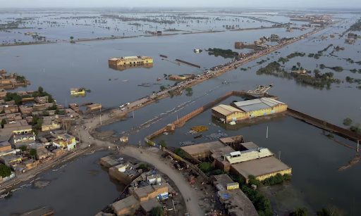
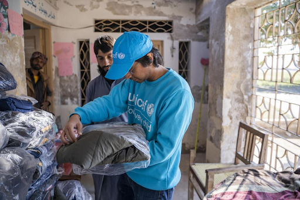
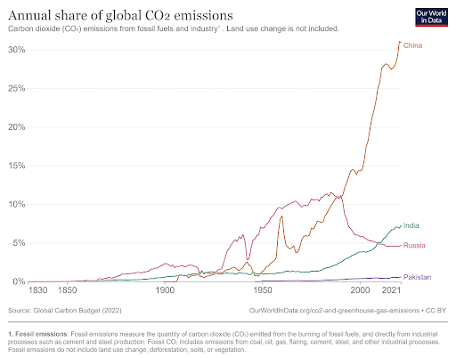

Last week, people living in the region of Balochistan were affected by one of the worst floods Pakistan has experienced in decades. Not only Balcohistan, but 90 other regions were adversely affected as well. Rainfall levels skyrocketed in 2022, which is one of the main reasons for the flood. Approximately one-third of Pakistan’s population was impacted during these floods. Another wave of floods in 2023 has made bitter memories come back for millions of people. As a result of this tragedy, many have lost their homes, education, jobs, and even loved ones. Crops were destroyed, making food a scarce resource.

A concerning statistic that was discovered was that half of the population that suffered from the floods were children. Many of them were displaced from their families. What are the reasons that caused this catastrophe to happen? Pakistan contributes a mere 1% towards global carbon emissions. As a result, PM of Pakistan Shehbaz Sharif blamed climate change and the developed countries for polluting and contributing in large amounts towards carbon emissions the cause of Pakistan’s flood problems. PM Sharif addressed from his home in Lahore, stating that “millions have been displaced [and] have become climate refugees within their own country” (sic). An estimated $30-35bn worth of property has been damaged but this estimate can be much lower than the actual damage. Many people have attributed this disaster with the mismanagement of the Pakistani government and the lack of infrastructure. UNICEF and many other non-profit organizations have tried to aid the regions that have been affected the most by giving shelter, food, education and even hospital treatments to severely injured people.

The government has received foreign aid from the IMF, but the PM hesitates any further aid as the country’s economy and its reserves are carrying a huge burden already. The floods have indeed affected crops, but with it have taken down Pakistan’s already struggling economy to a new low. Organizations around the world are trying to help Pakistan recover from the floods, but continuous help would be required in order to rebuild the regions in terms of getting the population back and building proper infrastructure, so that people once again can come back to normality.

Bibliography
(1) unicef
(2) agupubs.
(3) wikipedia
(4) The Guardian